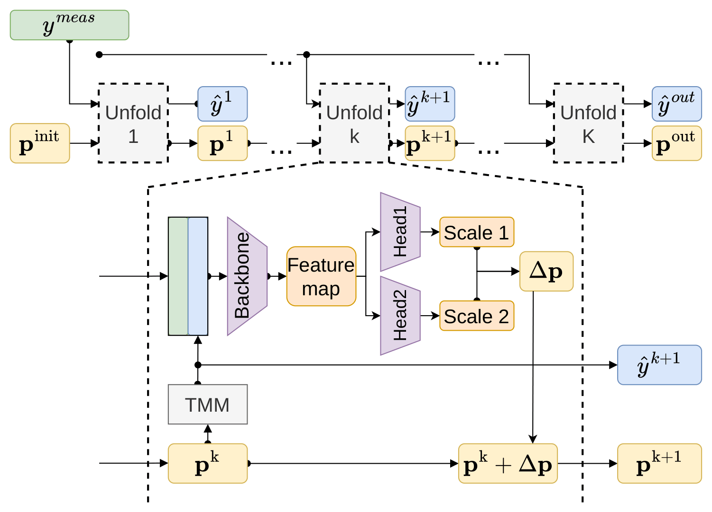
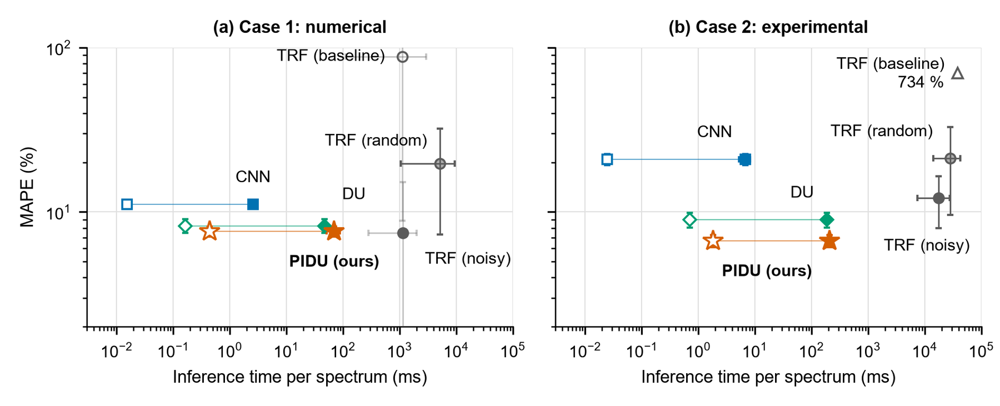
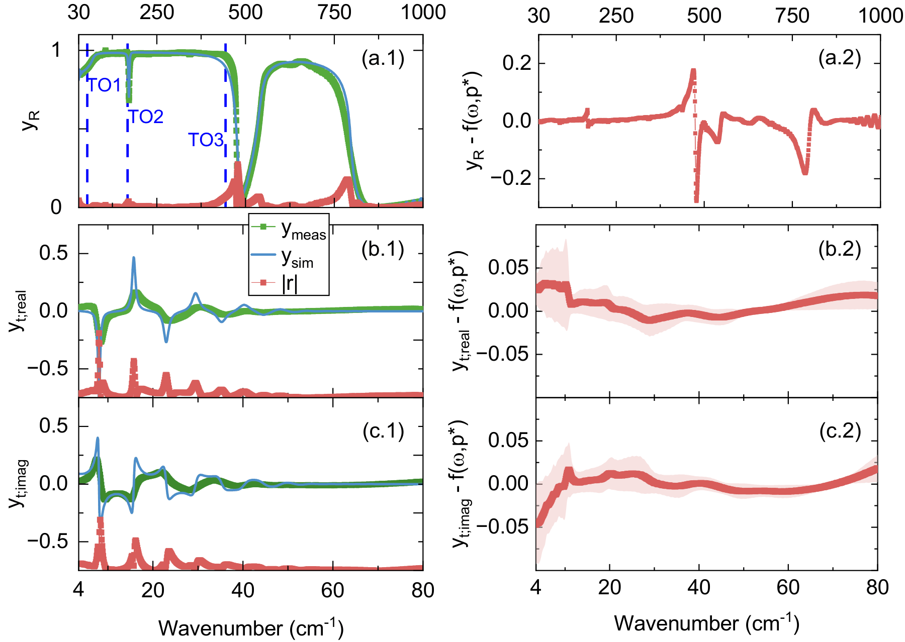

Fitting in three steps
A least-squares solver (TRF) needs a starting point and many iterations. PIDU starts without one and finishes in three unfolding stages, each re-simulating the spectrum of its current estimate.
loading
Initialisation-free material parameter extraction from optical spectra
1Signal Processing, Eindhoven University of Technology, The Netherlands
*Correspondence: m.koumans@tue.nl
A least-squares solver (TRF) needs a starting point and many iterations. PIDU starts without one and finishes in three unfolding stages, each re-simulating the spectrum of its current estimate.
Parameter estimation from optical data is a highly non-linear inverse problem which typically requires expert knowledge for proper convergence. Conventional optimisation methods remain the predominant approach for inferring model parameters from observational data; however, many existing solvers are computationally expensive, exhibit strong sensitivity to initialisation, or require expert tuning. In this work, we introduce physics-infused deep unfolding (PIDU), a learned optimisation framework that enables fixed-latency, real-time parameter extraction from optical data. PIDU leverages the paradigm of deep unfolding while explicitly incorporating the physical forward model at each iteration stage, enabling end-to-end learning of update rules that are driven by physics-based residuals. Introducing a physics-based layer improves convergence without requiring manual intervention or favourable initialisation conditions. We demonstrate that, without any initialisation, PIDU matches the accuracy of least-squares fitting initialised near the ground truth on numerical data, and outperforms it by 45% when extracting the optical material parameters of SrTiO3 from experimental terahertz spectra. Compared with randomly initialised fitting, PIDU reduces the error by 62% to 69%, while accelerating inference by one to four orders of magnitude. Furthermore, we evaluate the performance of residual-based inference against purely data-driven approaches on experimental data. We find that the inductive bias yields a 26% improvement in accuracy. Ultimately, PIDU offers a fast, initialisation-free alternative to iterative fitting for parameter extraction from optical spectra.
An iterative solver, unrolled into a fixed number of learned stages, with the physics kept in the loop.

The current estimate pk goes through a differentiable transfer-matrix model (TMM), which gives the spectrum ŷk that these parameters would produce.
The measurement and the simulation are stacked as channels, so the network sees the physics residual and not only the data.
A CNN backbone with detection heads at two spectral scales finds each resonance and predicts the update Δp. Three stages, trained end to end, replace hundreds of solver iterations.
Pick a test spectrum and step through the unfolding stages. Step 0 is PIDU's own initial estimate; every later step is one physics-informed update.
| parameter | reference | PIDU | error |
|---|
Want any of the 1024 test spectra? Run PIDU live on a CPU in the Hugging Face demo.
Open the live demoWithout an initial guess, PIDU reaches the accuracy of fitting started near the answer, one to four orders of magnitude faster.

We extract the optical parameters of bulk SrTiO3 from 75 multi-channel terahertz measurements taken from 4 K to room temperature: reflection power spectra plus complex transmission. PIDU is trained on simulations only, with empirical noise profiles calibrated to close the gap between simulation and measurement. On the measurements it outperforms the same unfolded network without the physics residual by 26%, and tracks the temperature-dependent soft mode close to an expert's manual fit.

@article{koumans2026pidu,
title = {Physics-infused Deep Unfolding for Initialisation-free Material
Parameter Extraction from Optical Spectra},
author = {Koumans, Milan and Stevens, Tristan S. W. and
van Sloun, Ruud J. G. and Van Mechelen, J. L. M.},
journal = {arXiv preprint},
year = {2026}
}